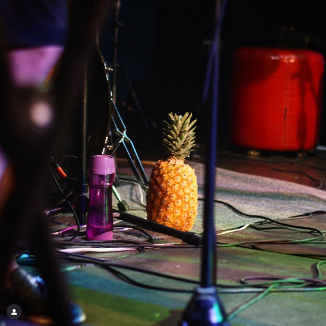

Idea Ficus (gruppo)
Da Prismapedìa, l'enciclopedia libera
| Idea Ficus | |
|---|---|
|
 Foto fuori contesto di un'ananas che stava sul loro Instagram |
|
| Info | |
Origine |
Russia |
Anni di attività | Almeno dal 2009 (SLB almeno dal 1995) |
Album pubblicati | 2 |
|
Genere | |
|
Ordine | |
|
Regno | |
| Membri | |
Musicanti |
|
Altra gente |
|
Sito web |
|
Idea Ficus (Russo: Идея Фикус)
è un gruppo musicale multilingue.
Ha pubblicato due album e fatto vari concerti.
Storia
Prima c'era un'altro gruppo chiamato Sudden Life Band [1]. E poi si è chiamato Idea Ficus. E poi alcuni membri se ne sono andati e altri sono venuti, o qualcosa del genere.
Nel frattempo sul canale mettevano traduzioni di canzoni da varie lingue al russo e altre lingue, tra cui un'unica traduzione dall'ucraino al greco. Molte da greco, inglese, e serbocroato, eccetera. E video di balli e cose che non so. Qualche recita scolastica.
E poi hanno fatto qualche concerto. E poi hanno registrato due album.
Bla bla bla
Concerti e album
In ordine cronologico inverso:
- Здесь / Ici
È il secondo album, l'unico con testi originali russi! E traduzione francese che non so da dove viene. In realtà non si sa neanche chi ha scritto i testi. Ma si sa chi li canta e li canta benissimo. Pare di stare in un sogno o in un ricordo. Contiene quella canzone sul mare con tremila strofe e un ritmo assurdo.
Nel documento con le parole ci sono poesie bonus! Sta su questo sito da qualche parte se lo trovi.
- В основном / The Most Of It
Una volta ci è capitato in mano un libro con le poesie di Robert Frost (un nome un programma, le poesie parlano spesso di neve e freddo e simili). Ecco e nel libro c'era l'originale da una parte, e si leggeva benissimo, e dall'altra una traduzione russa orrenda. E quindi nel corso di tipo qualche lustro ha iniziato a fare traduzioni sue. E l'ha musicate. E poi ha fatto questo concerto, e un libretto bilingue migliore, e un album. [2]
- Свираjте, svirajte
Musica jugoslava degli anni '60-'90![3] Ci sono un po' di canzoni di quel tipo super famoso, Đorđe Marjanović, alcune sue e alcune occidentali tradotte in serbocroato da lui, ed eventualmente ri-tradotte in russo. Qualcosa da Bajaga & Instruktori. E poi 3 brani di che ancora non distinguo di Boris Kovač.
- Z - José Afonso
Questo qua è dedicato al poeta, compositore e cantante portoghese José Afonso. Parla della "rivoluzione dei garofani" del 25 aprile 1974. Le canzoni sono eseguite in portoghese, e nella traduzione russa.[4]
- Дети сорок первого
In realtà non l'ho ancora visto. Il titolo è figli del 41, ed è qualcosa con le canzoni di 3 artisti americani nati del 41?[5]
- Одисеас Элитис
Poesie di Odisseas Elitis! Sai, quello della rondine che non fa primavera. Con musiche di un sacco di gente greca e anche una originale.[6] È il primo che hanno fatto a Hyperion
 !
! - Новогодний концерт
Sembra un concerto scolastico, ha un po' delle canzoni degli altri e alcune diverse. Da dove l'hanno filmato, da sopra un armadio??
- Altri sparsi per il canale YouTube. Poi li aggiungo
- Altri che non ho
Curiosità
- Sul canale c'è un trailer per un film che non è mai stato fatto.
- C'è anche un musical che non è mai stato fatto.
- Uno dei video è ambientato in Lituania.[7]
Note
-
↑ "Senza dubbio la vita è una cosa molto improvvisa." SUDDEN LIFE BAND Still Far Away From Dream (Live at Magnifique), Youtube
-
↑ Preso dal post di VK: Idea Ficus в Гиперионе. "The Most of It", VK
"Дорогие друзья!
'Idea Ficus' приглашает вас на премьеру новой программы 'The Most of It', посвященной одному из самых выдающихся поэтов XX века Роберту Фросту.
Творчество Фроста во многих отношениях двояко: под внешней простотой всегда скрыта глубина, а то и глубины. Взгляд сосредоточен на вещах, среди которых человек проводит свою жизнь; Фрост говорит о том, что понятно каждому, но мысли, которыми буквально пульсируют его стихи, вдохновлённые именно этими простыми вещами, по своей мощи подобны откровению.
Конечно, такую поэзию нелегко перевести или положить на музыку, но нам удалось и то, и другое. Что из этого вышло, вы узнаете, посетив наш концерт. Цена билета — 400 рублей. Билеты можно приобрести при входе на концерт, на сайте Гипериона или у любого фикуса. Начало в 20:00.
📍Хохловский переулок, 7-9с3, книжный клуб-магазин «Гиперион»
🕐 28.04.19 в 20:00
вход 400 ₽"
-
↑ Preso da questo post di VK: Idea Ficus в Гиперионе. "Свираjте, svirajte!", VK
"Дорогие все-все-все!
Мы рады сообщить вам, что 5-го декабря группа "Идея Фикус" выступит в книжном клубе-магазине "Гиперион" с новой программой! На этот раз у вас будет возможность познакомиться с югославской музыкой 60–90-х годов прошлого века и через неё проникнуться духом этой не существующей ныне страны. Мы постараемся создать для вас ту особенную атмосферу, которой наполнены фильмы Эмира Кустурицы, Горана Паскалевича, Душана Ковачевича и многих других. Постараемся многое вам рассказать и многое дать почувствовать. Не упускайте случай открыть для себя целый пласт балканской музыки, о котором вы, возможно, и не подозревали!
Начало концерта в 19:30.
Цена билета — 400 рублей. Билеты можно приобрести при входе на концерт, на сайте Гипериона или у любого фикуса :)
Приходите, мы вас очень ждём." -
↑ Preso da quest'altro post di VK: Idea Ficus в Гиперионе. "Z", VK
"Дорогие друзья!
Двадцать девятого апреля группа Идея Фикус приглашает вас на концерт, где впервые прозвучит наша новая программа под названием "Z". Она посвящается легендарному португальскому поэту, композитору и певцу Жозе Афонсу. Его стихи и музыка, как и вся его жизнь, наполнены стремлением к свободе, справедливости, истине и красоте. Они стали воплощением того духа, который привел Португалию к апрельской революции 1974 года, знаменитой "революции гвоздик", первой в истории революции без пролитой крови. Программа объединяет в себе многие музыкальные жанры: от традиционного португальского фадо до африканских ритмов Анголы и Мозамбика и бразильской самбы. Песни Жозе Афонсу будут исполняться как на португальском, так и на русском языке в переводах ПК. Огромная просьба ко всем, кто придет на концерт: принести с собой по одной красной гвоздике! Начало концерта в 19.00. Цена билета — 400 р. Как всегда, билеты можно приобрести у нас или купить прямо на месте. Ждем вас в Гиперионе!" -
↑ Preso da quest'altro post di VK ancora: Idea Ficus в Гиперионе. Дети 1941-го, VK
"Друзья!
И вот наконец у нас снова будет концерт. На этот раз мы с вами перенесемся в американские 60-е, время, когда на вершине своего творчества находились такие значимые для всего мира поэты и музыканты, как Боб Дилан, Пол Саймон и Арт Гарфанкел. Мы расскажем о них самих, о том времени, об их музыке и конечно сыграем их песни в наших аранжировках и на русском языке! Будем очень рады снова видеть вас на нашем концерте! Приходите)
📍 Цена билета - 400р
📍 Дата и время - 24 марта в 20:00
📍 Билеты можно приобрести как лично у каждого из нас, так и в самом Гиперионе, где собственно и пройдет концерт. Адрес можно посмотреть в описании" -
↑ Preso da quest'altro altro post di VK ancora: Idea Ficus в Гиперионе, VK
"Друзья!
Мы очень рады сообщить вам, что 10 декабря в книжном клубе «Гиперион» у нас состоится концерт! В этот раз Idea Ficus представит новую программу, посвященную творчеству великого греческого поэта Одиссеаса Элитиса, лауреата Нобелевской премии 1979 года. На этом концерте вы сможете услышать песни на музыку Микиса Теодоракиса, Илиаса Андриопулоса, Михалиса Транудакиса, Линоса Кокотоса, а также Павла Харитонова. Впервые стихи и песни будут исполняться не только на греческом, но и в переводах на русский язык! Ждем вас с нетерпением!" -
↑ "Esatto, la Lituania, ovvero le dune di sabbia nei pressi di Nida. È una piccola città sulla Penisola dei Curi, ex Prussia orientale". Les Paul plays Caravan , Youtube
Categorie: pagina Idea Ficus, interessi, Prismapedia, Caleidoscopio.